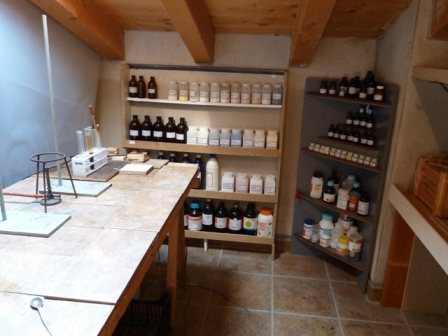
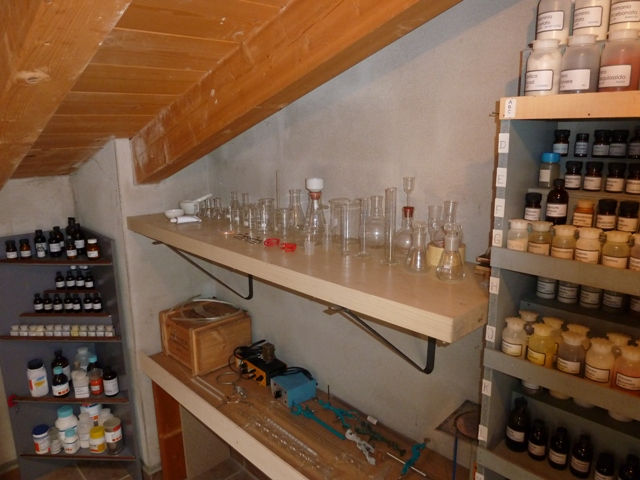
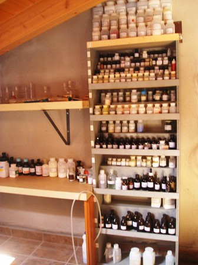
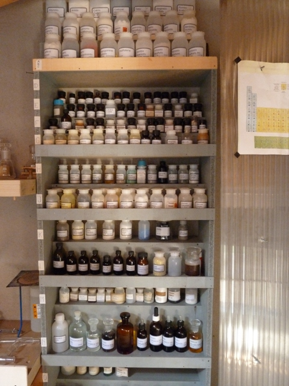

Nel post n. 38 ho fatto il commento, qui quattro immagini del mio... (non dico l'aggettivo!) Home-Lab...




E mai che ci sia tutto quello che serve! La vetreria, per quanto scarsa, è sempre in esubero. I reagenti, per quanto numerosi, son sempre pochi.
3 commenti